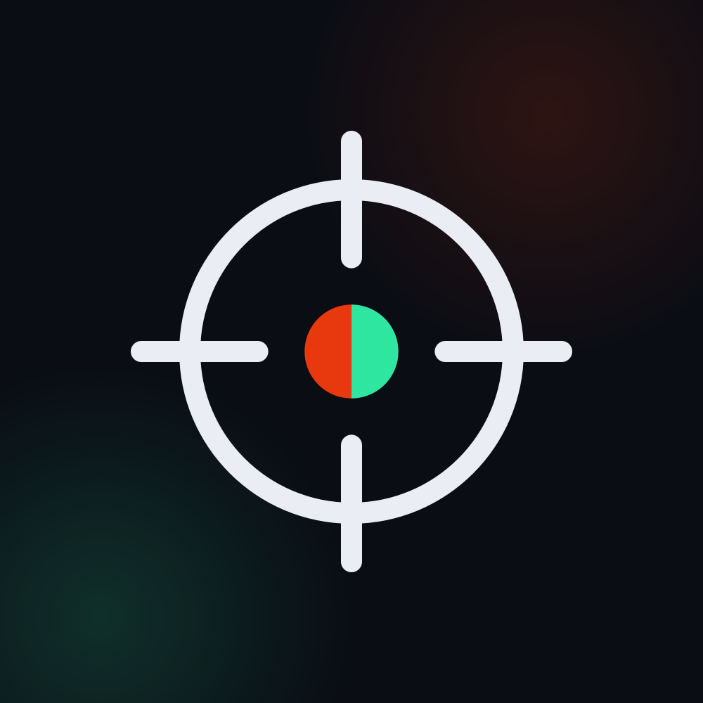
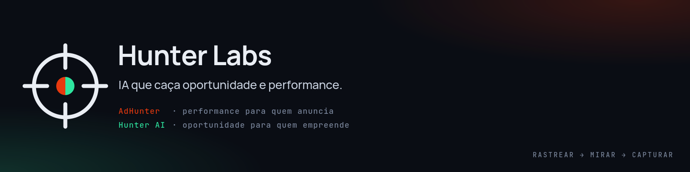
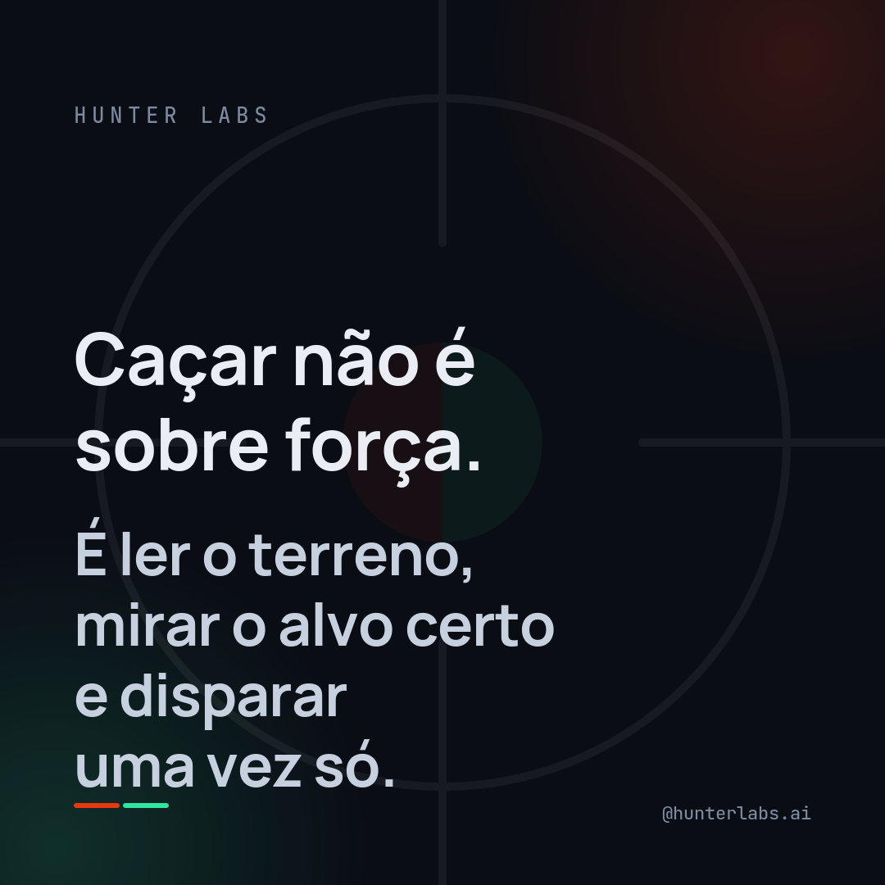
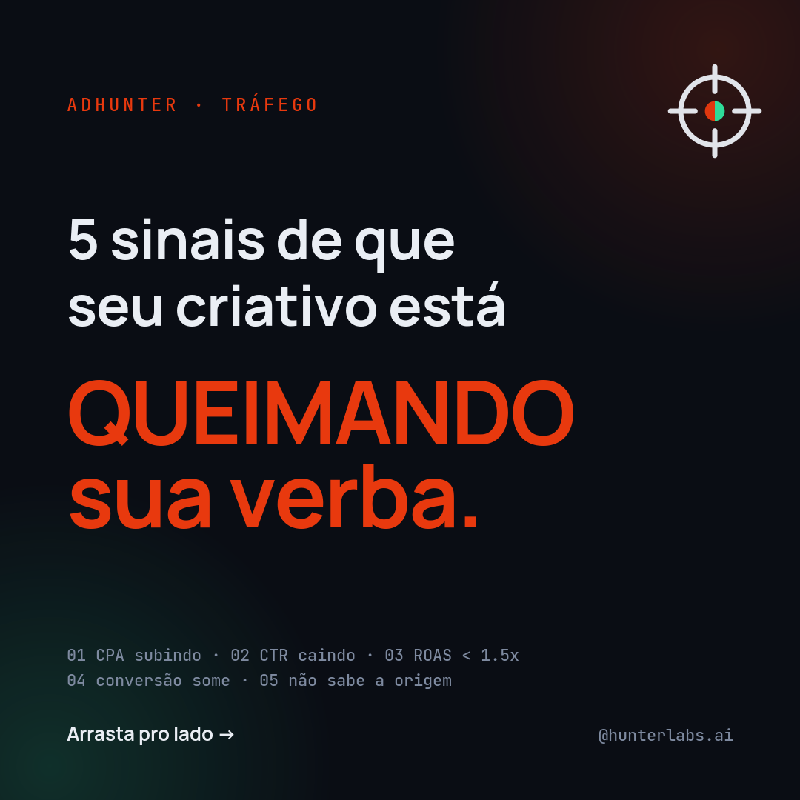
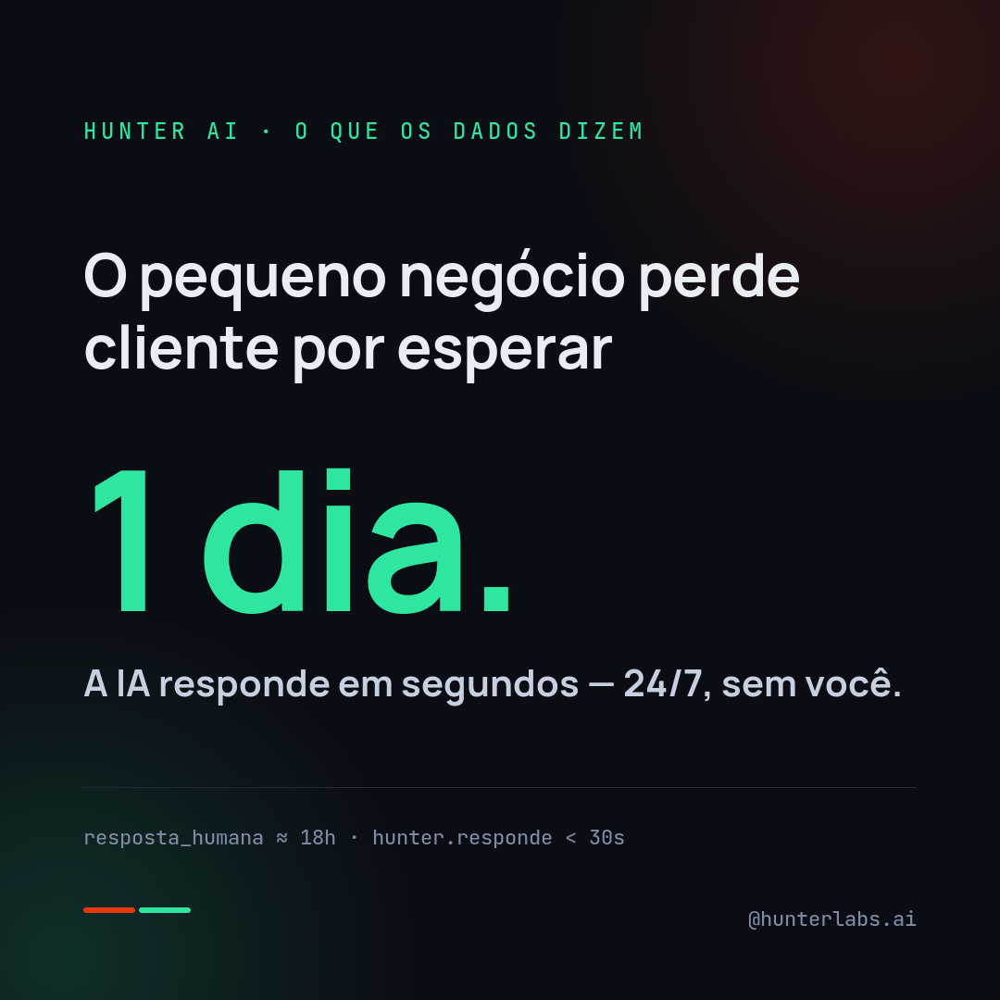
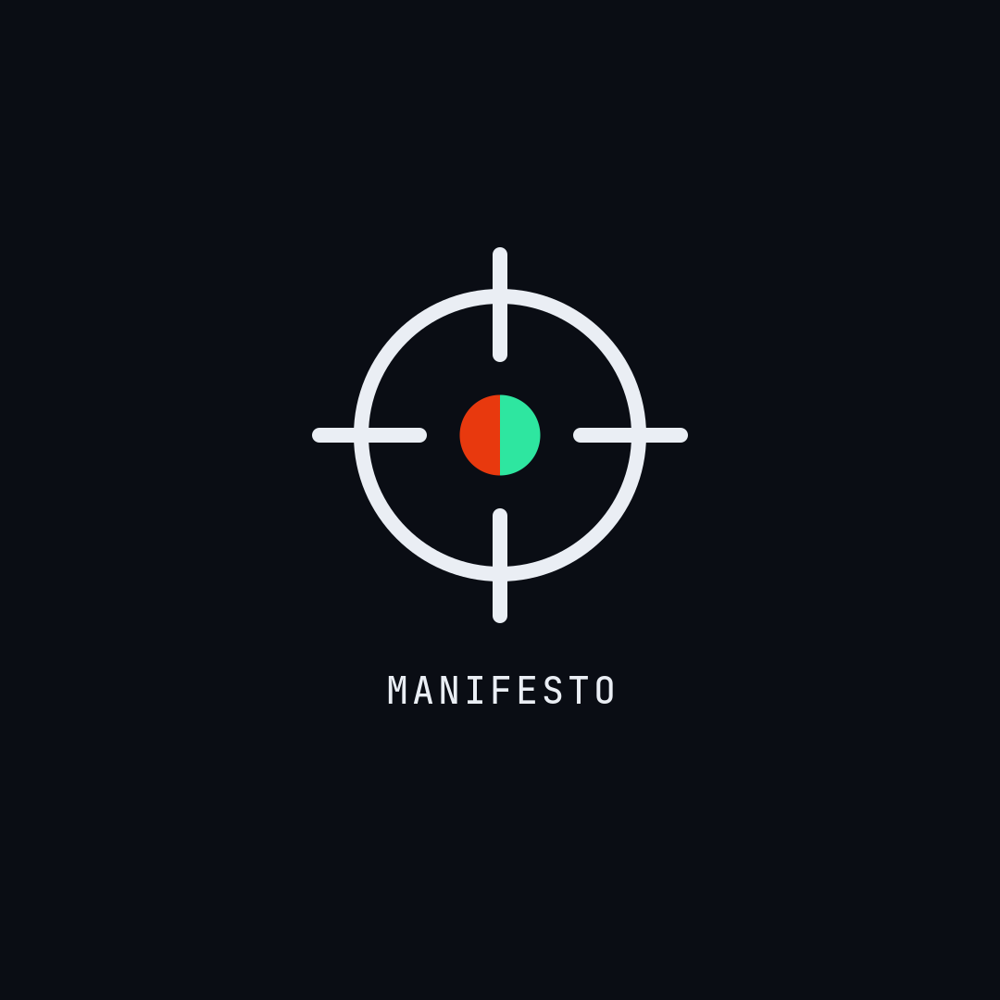
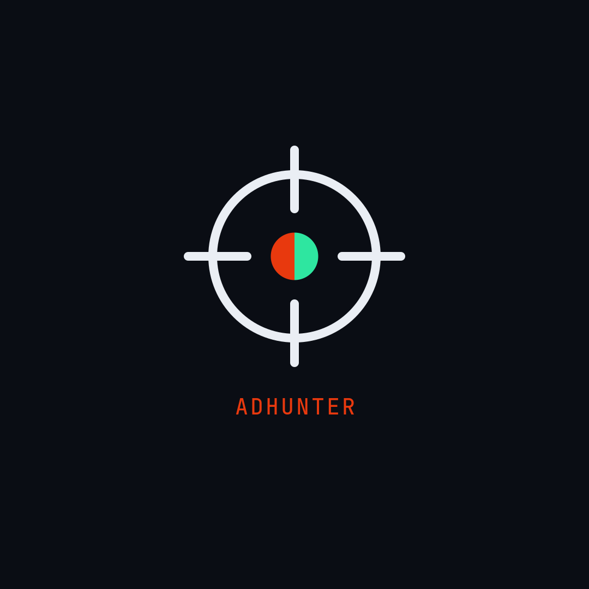
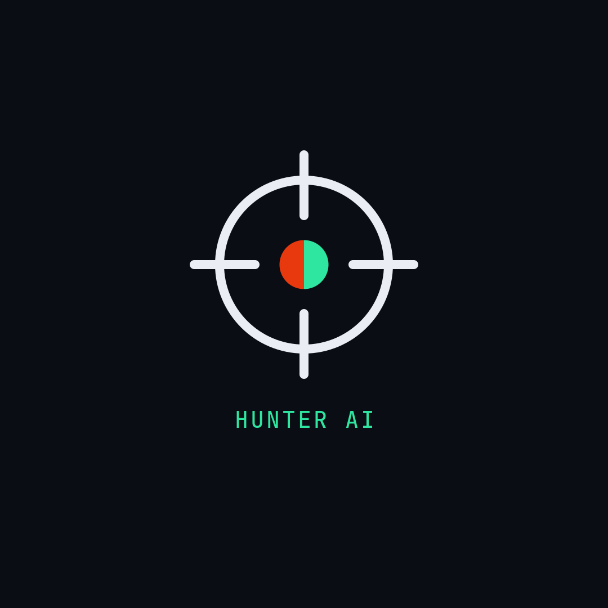
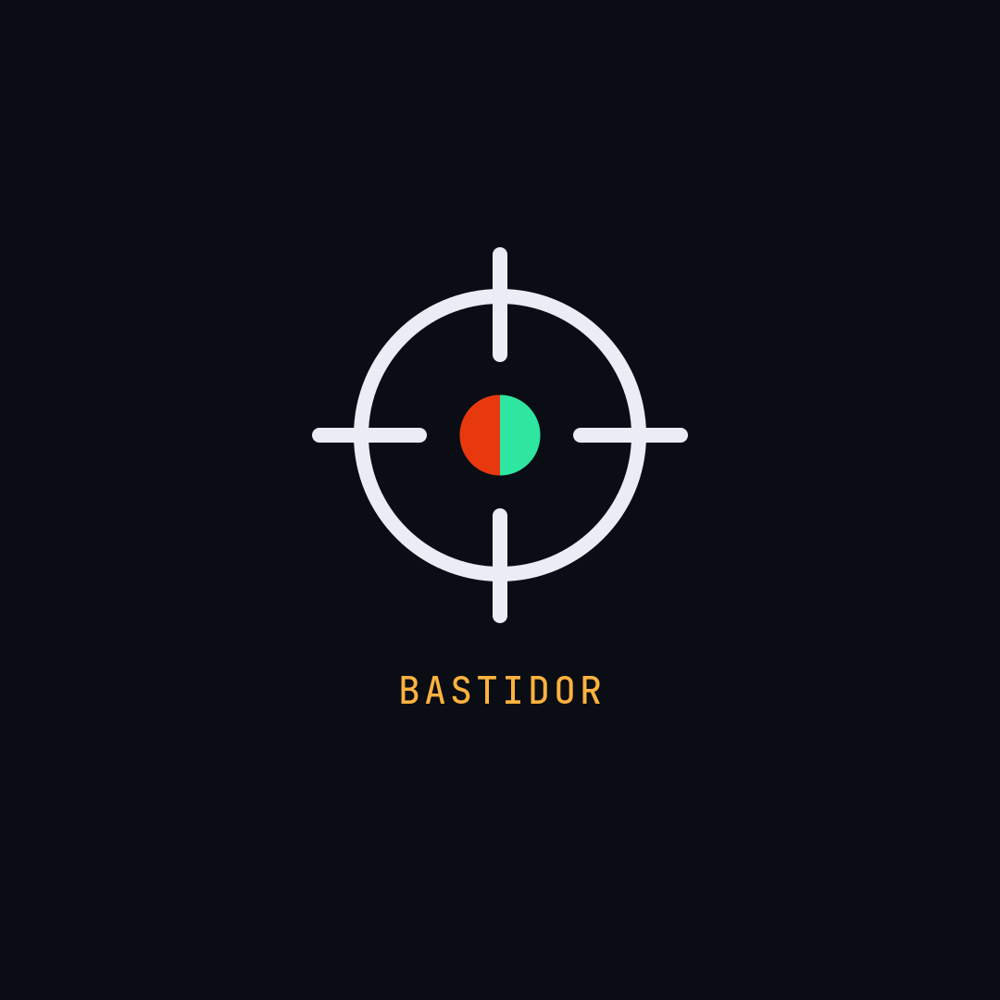

Avatar, banner, capas de destaque e templates de post — prontos pra subir. Todos os PNGs estão na pasta assets/, ao lado deste arquivo. Esta página é a fonte da verdade visual (renderiza com a tipografia real Space Grotesk no seu navegador).
A retícula de mira é o símbolo da família Hunter. No guarda-chuva ela é neutra (anel e marcas em branco/mist), com o ponto central dividido: ember à esquerda (AdHunter), signal green à direita (Hunter AI). Duas caças, um alvo.


Respiro mínimo ao redor da mira = raio do ponto central ×3. Nunca distorça, gire ou recolora o anel.

O logo da página cobre o canto inferior esquerdo — por isso o texto fica centralizado. A faixa RASTREAR → MIRAR → CAPTURAR amarra o conceito da família.
Cada formato mapeia um pilar e sinaliza o produto pela cor. Use como base no Canva/Figma — troque o texto, mantenha grid, cores e a assinatura inferior.







Fundo Ink domina (60%), Mist estrutura o texto (30%), ember + green são acentos com significado (10%). No guarda-chuva, ember e green nunca aparecem juntos como decoração — cada um marca seu produto.
Manrope — corpo e legendas. Calor e legibilidade em qualquer tela.
Nota técnica: os PNGs foram renderizados com Manrope no display (o ambiente de geração não tinha Space Grotesk). Para arte final no Canva/Figma, use Space Grotesk 700 nos títulos — esta página já mostra o resultado correto.